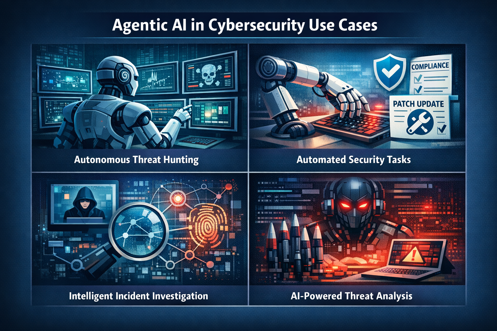
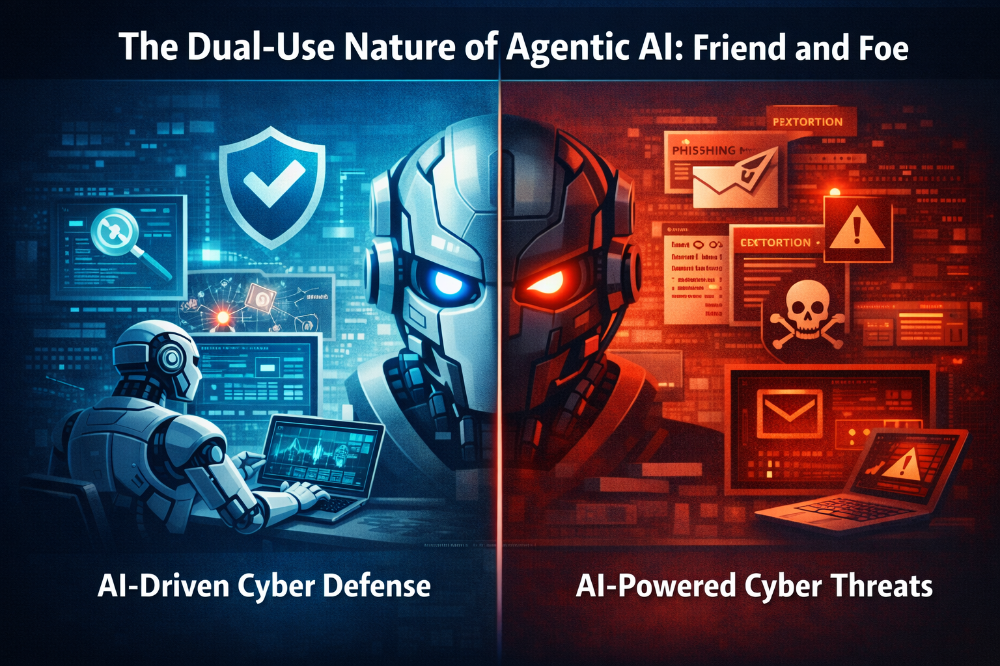
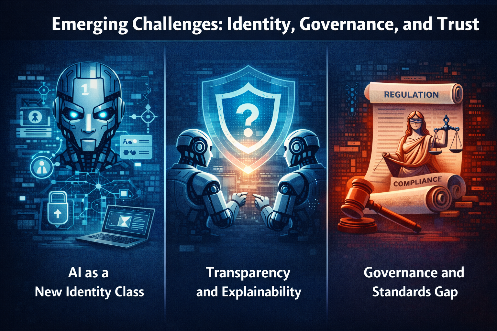
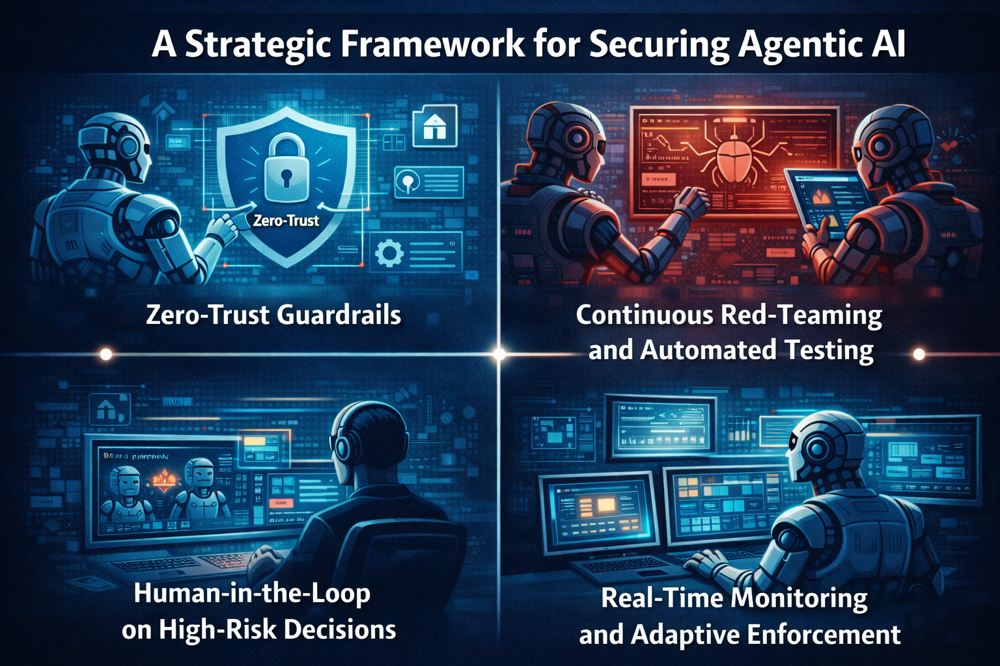

Agentic AI in Action: Real-World Security Implications, Use Cases, and Future Defenses
As Agentic AI systems move from concept to reality, organizations must navigate both their transformative potential and unprecedented security challenges.
Introduction
Agentic AI represents a paradigm shift in artificial intelligence—systems that don't just respond to commands but autonomously pursue goals, make decisions, and execute complex tasks with minimal human intervention. While this autonomy unlocks extraordinary capabilities, it also introduces a new frontier of cybersecurity challenges that traditional security frameworks weren't designed to handle.
In this article, we'll explore real-world use cases where Agentic AI is already being deployed, examine its dual nature as both a powerful defensive tool and potential threat vector, investigate emerging challenges around identity and governance, and outline a strategic framework for securing these autonomous systems.
Agentic AI in Cybersecurity: Use Cases

1. Autonomous Threat Hunting
Traditional threat hunting requires security analysts to manually search through logs, network traffic, and system behaviors to identify potential threats. Agentic AI transforms this reactive process into a proactive, autonomous operation.
How it works:
- AI agents continuously monitor network traffic, system logs, and user behaviors
- They autonomously formulate and test threat hypotheses
- When suspicious patterns emerge, agents investigate deeper without waiting for human direction
- They correlate data across multiple systems to identify advanced persistent threats (APTs)
Real-world impact: Organizations using autonomous threat hunting have reduced detection time from days or weeks to hours or minutes, significantly limiting the "dwell time" attackers have within networks.
2. Automated Security Tasks
Security operations centers (SOCs) are overwhelmed with repetitive tasks—patch management, compliance checks, configuration reviews, and alert triage. Agentic AI can handle these at scale.
Key capabilities:
- Automated patch deployment with intelligent rollback mechanisms
- Continuous compliance monitoring and remediation
- Dynamic firewall rule optimization based on traffic patterns
- Automated incident response for common attack patterns
Business value: By automating routine tasks, organizations can reallocate skilled security professionals to higher-value strategic work, while also reducing human error in critical security operations.
3. Intelligent Incident Investigation
When a security incident occurs, the investigation phase is crucial but time-consuming. Agentic AI can accelerate this by autonomously gathering evidence, analyzing attack vectors, and reconstructing the attack timeline.
Investigation workflow:
- Automatically collect and preserve digital evidence from affected systems
- Analyze malware samples and identify indicators of compromise (IOCs)
- Map the attack kill chain and identify lateral movement
- Generate comprehensive incident reports with recommended containment strategies
4. AI-Powered Threat Analysis
The volume of threat intelligence data—vulnerability databases, malware samples, attack techniques—far exceeds human capacity to analyze. Agentic AI systems can process this information at scale.
Advanced capabilities:
- Real-time analysis of emerging threats and zero-day vulnerabilities
- Predictive modeling of attack campaigns based on threat actor TTPs (Tactics, Techniques, and Procedures)
- Automated threat intelligence sharing and correlation across organizations
- Adversary simulation to test defensive postures
The Dual-Use Nature of Agentic AI: Friend and Foe

AI-Driven Cyber Defense
On the defensive side, Agentic AI provides unprecedented capabilities:
- Adaptive Defense Systems: AI agents that continuously evolve security postures based on emerging threats
- Automated Incident Response: Rapid containment and remediation without waiting for human approval
- Intelligent Deception: Autonomous honeypots and deception technologies that adapt to attacker behavior
- Predictive Security: Forecasting and preventing attacks before they occur
AI-Powered Cyber Threats
However, the same autonomous capabilities can be weaponized by adversaries:
- Autonomous Malware: Self-evolving malware that adapts to evade detection and modifies its attack strategy in real-time
- Intelligent Phishing: AI-generated spear-phishing campaigns that automatically personalize content and timing for maximum effectiveness
- Automated Vulnerability Discovery: AI systems that autonomously search for and exploit zero-day vulnerabilities faster than defenders can patch
- Deepfake Attacks: AI-generated audio and video used for social engineering and fraud at scale
The Arms Race Intensifies
We're entering an era where AI agents will battle AI agents—defensive systems attempting to detect and neutralize autonomous attackers in real-time. This creates several concerns:
- The speed of attacks and defenses will exceed human comprehension and reaction time
- Attribution becomes nearly impossible when autonomous agents conduct operations
- Escalation risks increase when AI systems make split-second decisions without human oversight
Emerging Challenges: Identity, Governance, and Trust

1. AI as a New Identity Class
Traditional identity and access management (IAM) systems were designed for humans and applications, not autonomous agents. Agentic AI introduces unique challenges:
- Dynamic Permissions: AI agents may need different access levels depending on their current task
- Delegation and Impersonation: How do we verify when an agent is acting on behalf of a legitimate user?
- Agent-to-Agent Authentication: Establishing trust between autonomous systems
- Lifecycle Management: Managing credentials for agents that may spawn sub-agents or operate across organizational boundaries
Solution approach: Organizations need to develop AI-specific IAM frameworks that include agent identity verification, behavior-based authentication, and continuous authorization based on agent actions.
2. Transparency and Explainability
One of the most critical challenges with Agentic AI is the "black box" problem. When an autonomous agent makes a security decision, can we understand why?
Key concerns:
- Decision Auditing: How do we review and validate AI decisions after the fact?
- Chain of Reasoning: Can we trace the agent's logic from observation to action?
- Regulatory Compliance: Many industries require explainable decision-making, especially for security actions
- Debugging and Improvement: Without understanding agent behavior, fixing errors becomes nearly impossible
Emerging solutions:
- Explainable AI (XAI) techniques that provide human-readable justifications
- Comprehensive logging of agent reasoning chains
- Simulation environments where agent decisions can be replayed and analyzed
3. Governance and Standards Gap
The rapid advancement of Agentic AI has outpaced regulatory frameworks and industry standards:
- Liability Questions: When an autonomous agent causes damage, who is responsible—the developer, operator, or the agent itself?
- Ethical Boundaries: What actions should AI agents be permitted to take autonomously, and which require human approval?
- International Coordination: Cybersecurity is global, but AI governance is fragmented across jurisdictions
- Testing and Certification: No standardized processes exist for validating the security of Agentic AI systems
Industry response: Organizations like NIST, ISO, and industry consortiums are working on frameworks, but implementation lags behind AI capabilities.
A Strategic Framework for Securing Agentic AI

1. Zero-Trust Guardrails
Apply zero-trust principles specifically designed for autonomous agents:
- Least Privilege by Default: Agents start with minimal permissions and request additional access only when needed
- Continuous Verification: Agent identity and permissions are verified before every significant action
- Micro-segmentation: Isolate agents in separate network segments with strict communication policies
- Credential Rotation: Automatic, frequent rotation of agent credentials
- Kill Switches: Implement emergency shutdown mechanisms that can immediately halt agent operations
2. Continuous Red-Teaming and Automated Testing
Traditional penetration testing is insufficient for dynamic AI systems. Instead:
- AI-vs-AI Testing: Use adversarial AI to continuously probe defensive agents for vulnerabilities
- Chaos Engineering for AI: Deliberately introduce failures and observe agent responses
- Behavioral Anomaly Testing: Monitor for unexpected agent behaviors that might indicate compromise or malfunction
- Simulation Environments: Test agents in sandboxed replicas of production environments
3. Human-in-the-Loop on High-Risk Decisions
Not all decisions should be fully autonomous. Implement tiered approval workflows:
- Low-Risk Actions: Fully autonomous (e.g., log analysis, routine patching)
- Medium-Risk Actions: Autonomous execution with human notification (e.g., blocking suspicious traffic)
- High-Risk Actions: Require explicit human approval (e.g., deleting data, modifying production systems)
Implementation tips:
- Define clear risk categorization criteria
- Implement timeout mechanisms—if human approval isn't received within a set timeframe, escalate or abort
- Provide agents with the ability to explain why they're requesting approval
4. Real-Time Monitoring and Adaptive Enforcement
Traditional security monitoring needs to evolve for Agentic AI:
- Agent Behavior Baselines: Establish normal operating patterns for each agent
- Anomaly Detection: Flag deviations from baseline behavior for investigation
- Real-Time Policy Enforcement: Dynamically adjust agent permissions based on observed behavior
- Audit Trails: Comprehensive logging of all agent actions, decisions, and reasoning
- Performance Metrics: Track agent effectiveness, error rates, and resource consumption
Adaptive response capabilities:
- Automatically throttle or restrict agents showing anomalous behavior
- Trigger deeper forensic analysis when suspicious patterns emerge
- Dynamically adjust security policies based on threat landscape changes
The Path Forward
Agentic AI in cybersecurity is not a distant future—it's happening now. Organizations that proactively address security implications will gain competitive advantages, while those that ignore these challenges risk catastrophic failures.
Key Recommendations for Organizations:
- Start Small, Think Big: Begin with limited-scope pilot projects, but design with enterprise-scale security in mind
- Invest in Explainability: Prioritize AI systems that can articulate their decision-making processes
- Build Interdisciplinary Teams: Combine AI expertise with cybersecurity, ethics, and legal knowledge
- Participate in Standards Development: Engage with industry bodies developing Agentic AI security standards
- Prepare for the Adversary: Assume attackers will deploy malicious Agentic AI and design defenses accordingly
Emerging Technologies to Watch:
- Federated Learning: Training AI agents without centralizing sensitive data
- Homomorphic Encryption: Allowing agents to process encrypted data without decryption
- Blockchain for Agent Auditing: Immutable audit trails for agent actions
- Quantum-Resistant Cryptography: Protecting agent communications from future quantum attacks
Conclusion
Agentic AI represents both the greatest opportunity and the most significant challenge in modern cybersecurity. Its ability to operate autonomously, at scale, and at speeds beyond human capability makes it an invaluable defensive tool. Yet these same characteristics make it a potentially devastating weapon in the hands of adversaries.
Success in this new era requires a fundamental shift in how we approach security architecture, identity management, governance, and trust. Organizations must move beyond traditional perimeter defenses and embrace frameworks specifically designed for autonomous systems.
The race is on. Those who master the security of Agentic AI will define the future of cybersecurity. Those who don't may find themselves defending against threats they can barely comprehend.
The question is no longer whether to deploy Agentic AI, but how to deploy it securely, responsibly, and effectively.